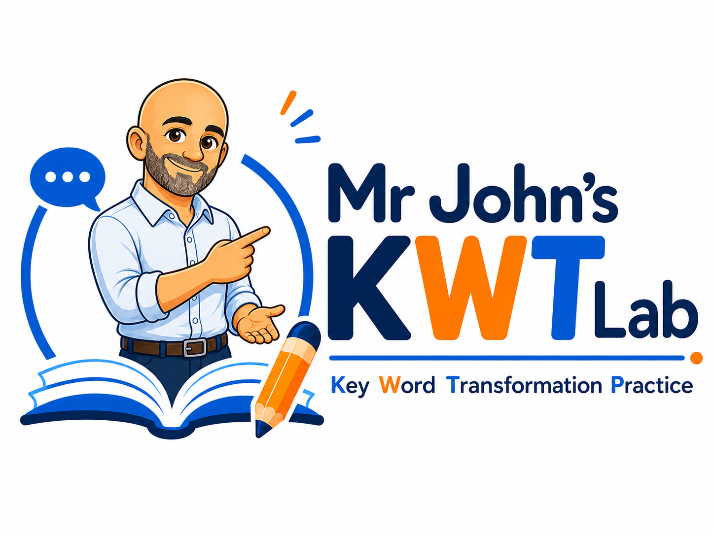

Mr John’s KWT Lab
Block 7 · Phrasal Verbs, Fixed Expressions & Idioms
Lexical Transformation Trainer
Bulk vocabulary version. This lab now includes a wide bank of phrasal verbs, fixed expressions, set phrases and idioms, with parallel generated examples, controlled distractors and the official 2–5-word answer limit.